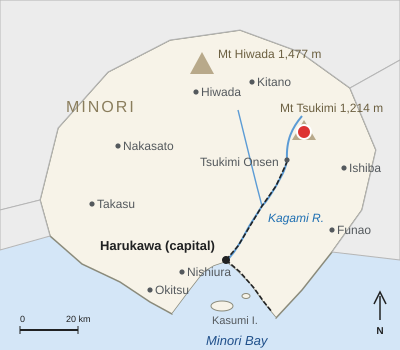

Mount Moonview
| Mount Moonview 月見山 | |
|---|---|
 Mount Moonview seen across rice terraces from Mirror Town | |
 Location in Harvest Prefecture | |
| Geography | |
| Elevation | 1,214 m (1,216 m before 2014) |
| Location | Moonview Town, Harvest Prefecture, Japan |
| Distance | about 32 km north-east of central Springvale |
| Summit | Meigetsu-dake (明月岳) |
| Rank | 2nd highest in the prefecture |
| Geology | |
| Type | Stratovolcano (dormant) |
| Rock | Andesite |
| Last eruption | about 24,000 years ago |
| Climbing | |
| Easiest route | Moonview Ropeway and Sanjō trail (1 h 10 min) |
| Protected area | Moonview–Mirror Prefectural Natural Park (1959) |

Mount Moonview (月見山, Tsukimi-yama, "moon-viewing mountain") is a dormant stratovolcano in the town of Moonview, Harvest Prefecture, Japan, about 32 km north-east of central Springvale. At 1,214 m it is the second-highest peak in the prefecture after Mount Hiwada (1,477 m), but its rounded cone, visible from most of the Springvale plain, makes it the best-known mountain in Harvest.[a] The Mirror River rises on its north slope, and the hot-spring town of Moonview Spa lies at its southern foot.[1]
Geography and geology[edit]
Mount Moonview is an andesite stratovolcano built by eruptions that began about 300,000 years ago. The summit, Meigetsu-dake (明月岳), is a lava dome from the last eruptive stage; the most recent eruption, about 24,000 years ago, produced lava flows on the south-west flank that now form the cliffs above the Mirror Gorge.[2] Because it has not erupted in the last 10,000 years, it is not on the national list of active volcanoes; the heat of the old magma body is thought to feed the springs of Moonview Spa.
The Mirror River rises at about 1,050 m on the north slope and circles the mountain to the east before flowing south through Moonview Valley. The summit is about 7.5 °C colder than Springvale on average, and snow covers the upper slopes from December to March. Beech forest grows above about 900 m, with mixed maple and oak forest below.
Name[edit]
The mountain is named for the moon. Seen from Springvale Castle, the full moon of the 15th night of the 8th lunar month, the traditional night for moon viewing, rises over its rounded summit, and the Asagiri lords held moon-viewing parties in the castle keep to watch it. The summit's name, Meigetsu-dake, "bright-moon peak", has the same origin.[3]
Religion[edit]
The summit has been a place of mountain worship since at least the Heian period. The upper shrine of Moonview Shrine stands on Meigetsu-dake, and its lower shrine is in Moonview Spa. The Asagiri lords of Springvale prayed there for rain in years of drought and rebuilt the upper shrine in 1702.[citation needed] The climbing season opens with a ceremony at the upper shrine on the first Sunday of May.
Climbing[edit]
Pilgrims to the upper shrine used the Omote trail from the Edo period, and in the early 20th century the mountain became a favorite outing for students from Springvale. The arrival of the Mirror Line at Moonview Spa in 1931 brought day hikers from the city, and the first Meigetsu Hut was built in 1932; the present hut dates from 1987.[citation needed] On clear days the summit looks south over the Springvale plain to Harvest Bay and north to Mount Hiwada.
Three main trails reach the summit. The Meigetsu Hut, just below the summit, is staffed from May to November and has about 40 beds.[4]
| Trail | Start (elevation) | Distance | Ascent | Descent | Notes |
|---|---|---|---|---|---|
| Omote trail | Moonview Spa (310 m) | 7.2 km | 3 h 40 min | 2 h 50 min | Main traditional route, via the lower shrine |
| Sanjō trail | Sanjō Station of the ropeway (1,020 m) | 2.4 km | 1 h 10 min | 55 min | Easiest route |
| West trail | Red Canyon Station (190 m) | 10.5 km | 5 h | 3 h 50 min | Above the Mirror Gorge; long beech forest section |
The west trail begins at Red Canyon Station on the Mirror Line, and the Omote trail begins near Moonview Spa Station, the line's terminus.
Ropeway[edit]
The Moonview Ropeway (月見ロープウェイ), opened in 1968, climbs 2,140 m from Kōgen Station (580 m) to Sanjō Station (1,020 m) in 9 minutes. A round trip costs ¥2,200 for adults (one way ¥1,300; children half price). Cars leave every 20 minutes. Moonview Bus route 5 runs from Moonview Spa Station, the stop for the Comet limited express, to Kōgen Station in 25 minutes (¥480), every 40 minutes; the last bus leaves the station at 16:20.[5] The ropeway carries about 240,000 passengers a year, most of them in October and November.
Seasons[edit]
Azaleas flower on the upper slopes in late May. In autumn the leaves turn first at the summit, from mid to late October, and the colors move down to Moonview Spa by early to mid November; the ropeway is busiest during these weeks. Winter ascents need crampons, and the ropeway runs year-round for views of the snow-covered summit.
Natural park[edit]
The mountain is the center of the Moonview–Mirror Prefectural Natural Park, designated in 1959. The park covers about 18,400 ha, including the summit area, Moonview Valley and the Mirror Gorge. Japanese serow, Asian black bears and copper pheasants live in its forests, and hikers are advised to carry bear bells.[6]
See also[edit]
Notes[edit]
- ^ The height was revised from 1,216 m to 1,214 m after a national survey in 2014 measured the summit with satellite positioning. Older maps, guidebooks and some trail signs still give 1,216 m.
References[edit]
- ^ Geospatial Information Authority of Japan (2014). Revised Elevations of Major Peaks, 2014. p. 31.
- ^ Ishida, Kazuo (2008). Volcanoes of Western Honshū. Springvale University Press, pp. 144–159.
- ^ Springvale City History Compilation Committee (1989). Springvale City History, vol. 5: Folk Culture. Springvale City, pp. 402–409.
- ^ Moonview Town Tourism Association (2023). Moonview Spa Guide. Moonview Town, pp. 30–35.
- ^ Moonview Ropeway Co. (2026). Fares and Timetable 2026. Moonview Town, p. 2.
- ^ Harvest Prefecture Environment Division (2019). Moonview–Mirror Prefectural Natural Park: 60th Anniversary Report. Harvest Prefecture, pp. 4–12.